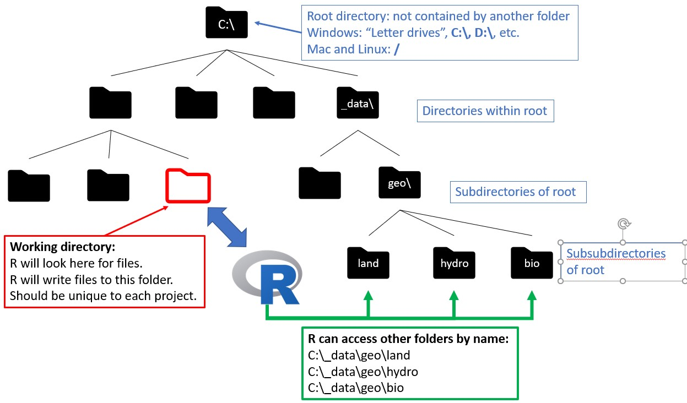
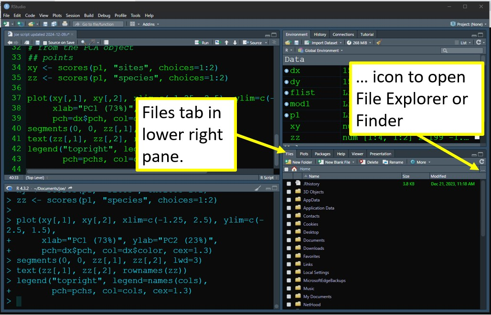
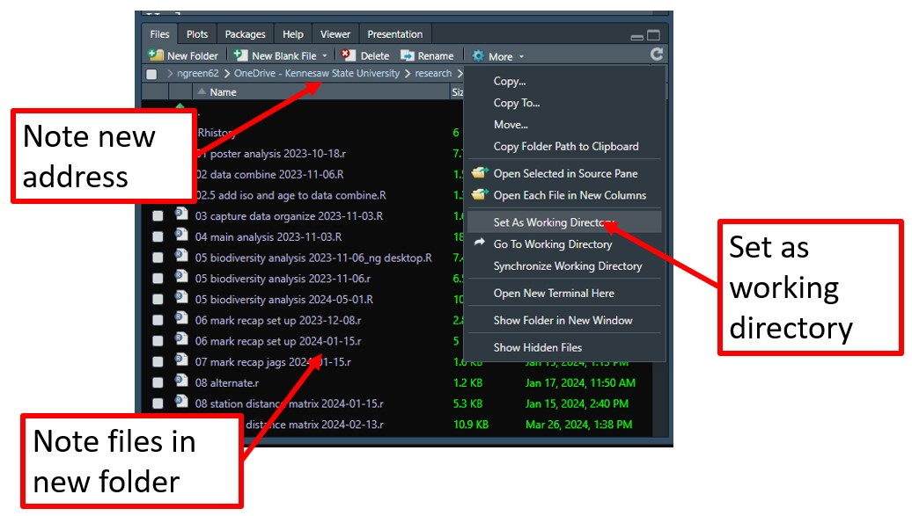
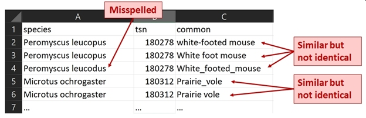

getwd()[1] "C:/_courses/appl-biol-data-analysis/chapters"For a beginning R user, getting data into and out of R can seem like the hardest part. This is because R interacts with your computer in a way that you’re probably not used to. Once you understand a few things like how your computer stores files and how to save in the correct format, things will get easier!
Your file system begins with the root directory. In Windows, these are the top folder of a “letter drive” like C:\, E:\, and so on. On Mac and Linux, the root directory is simply /. Users should not store files in the root directory without a very good reason.
Every folder in the file system is a branch or subdirectory of the root. This creates a hierarchy, where folders and files are nested within other folders (except the root, which is not contained by anything).
Each folder and file has a name. Names of files are also called filenames or file names.
The directory path or just path is the “address” of a folder or file within the hierarchy. Paths are constructed by combining the names of the root, the containing folders, and finally the terminal name (for folders) or filename (for files). The elements of the path are separated by slashes:
In Windows, elements of paths are separated by backslashes \.
In Mac and Linux, elements of paths are separated by front-slashes /.
R uses front-slashes. So, Windows addresses need to have their \ changed to /, or escaped by doubling each to \\ (see figure below).
Many programs, including R, will designate a folder as the working directory: a folder which contains the data the program can access, and which will contain any files created by the program. The default R working directory is the Documents folder on Windows, or the Home folder on a Mac. You should choose a different folder to be your working directory, however. One common practice is to create a single folder for each project which contains all the data needed for that project, and which will receive all the output from R for the project.

You can, and should, have a separate working directory for every project. This way files stay together, and the acts of importing and exporting files are easier.
In R, you can find your working directory in the console with getwd():
getwd()[1] "C:/_courses/appl-biol-data-analysis/chapters"You can change it with setwd():
# example; not run
setwd("C:/Users/ngreen62/Documents/biol 7410")These commands are usually run first in a script, to facilitate data import.
In RStudio, you can set your working directory in the Files tab by first navigating to a folder, then clicking More - Set as working directory.


What is the advantage of setting your working directory? R will look in the working directory first for any files, and put outputs there by default.
For example, the command dir() lists the contents of a folder. Without any arguments, it will automatically list the contents of the working directory.
# not run, but try on your machine:
# equivalent commands:
dir()
dir(getwd())
# for other folders, you need to specify the path:
dir("C:/Users/ngreen62/Documents/biol 7410/data")When importing data, R will import from the working directory by file name, but requires a path for a file in any other folder.
# not run
# import from working directory:
my.data <- read.csv("example.csv")
# equivalent:
my.data <- read.csv(paste(getwd(), "example.csv", sep="/"))
# import from somewhere else:
my.data <- read.csv("C:/Users/ngreen62/Documents/example.csv")If you open an R script with R or RStudio that is contained in a folder, that folder will be automatically set as the working directory. Clever use of the working directory can save you a lot of time. Sloppy use of the working directory (e.g., not specifying the working directory in each R or RStudio session) can lead to disaster and frustration.
Before you try to import your data into R, take a few minutes to set yourself up for success.
Good file names are essential for a working biologist. Chances are you will work on many projects over the course of your career, each with its own collection of data files. Even if you store each project’s data in a separate folder, it is a very good idea to give data files within those folders names that are descriptive. I have worked with many people who insist on using file names like “data.xlsx” and relying on their own memory or paper notes to tell them which file is which. Consider this list of particularly egregious file names:
data.txt
Data.txt
data.set.csv
analysis data.xlsx
thesis data.xlsx
DATA FINAL - copy.txt
data current.revised.2019.txt.xlsx
final thesis data revised revised final revised analysis.csv
We are all guilty of this kind of bad naming from time to time. What do all of the above have in common? They are vague. The names contain no meaningful information about what the files actually contain. Some of them are ambiguous: different operating systems or programs might read “data.txt” and “Data.txt” as the same file, or as different files!
Data file names should be short, simple, and descriptive. There are no hard and fast rules for naming data files so I’m not going to prescribe any. Instead, I’ll share some examples and explain why these names are helpful. As you go along and get better at working with data you will probably develop your own habits, and that’s okay. Just try to follow the guiding principles of short, simple, and descriptive.
Here are some example file names with explanations of their desirable properties:
sturgeon_growth_data_2017-02-21.txt
This name declares what the file contains (growth data for sturgeon), and the date it was created. Notice that the date is given as “YYYY-MM-DD”. This format is useful because it automatically sorts chronologically. This file name separates its words with underscores rather than spaces or periods. This can prevent some occasional issues with programs misreading file names (white space and periods can have specific meanings in some contexts).
dat_combine_2020-07-13.csv
This name signifies that the file contains a “combined” dataset, and includes the date of its creation. This would be kept in a folder with the files that were combined to make it. Within a project I usually use prefixes on file names to help identify them: “dat” for datasets with response and explanatory variables; “met” for “metadata”; “geo” or “loc” for geospatial datasets and GIS layers; and “key” for lookup tables that relate dat and met files. You might develop your own conventions for types of data that occur in your work.
dat_vegcover_nrda_releaseversion_2021-05-03.csv
This name is similar to the last name, but includes some additional signifiers for the project (NRDA) and the fact that this is the final released version.
Recently Broman and Woo (2018) reviewed good practices for storing data in spreadsheets. Their article is short and easy to read, and gave a few recommendations for data formatting:
Be consistent
Choose good names for things
Write dates as YYYY-MM-DD
No empty cells
Put just one thing in a cell
Make it a rectangle
Create a data dictionary
No calculations in the raw data files
Do not use font color or highlighting as data
Make backups
Use data validation to avoid errors
Save the data in plain text files
Most people who work with data, myself included, probably agree with their recommendations. Better, there is plenty of room for individual preferences in the exact implementation of each principle. You will save yourself a lot of headache if you follow their advice.
Variable names, like data file names, should be brief but informative. There are few restrictions on what variable names can be in R. For simplicity, I recommend you use only lowercase letters, numbers, underscores (_), and periods (.) in variable names. Other symbols are either inconvenient to type, or can cause issues being parsed by R. Some common pitfalls include:
Leading numerals will cause an error if not enclosed in quotation marks:
# not run, but try on your machine:
x <- iris[1:5,]
names(x)[1] <- "3a"
x$3a
x$'3a'
x[,"3a"]Numeral-only names will cause an error. They can also be misinterpreted as column numbers. Don’t give your variables numeral-only names.
# not run, but try on your machine:
x <- iris[1:5,]
names(x)[1] <- "3"
x$3 # error
x$'3' # works
x[,3] # column number 3
x[,"3"] # column named "3"Spaces in variable names will cause errors because R interprets a space as whitespace, not part of a name. If you insist on using spaces, enclose the variable name in quotation marks every time you use it. This is one of the few places where R cares about whitespace.
# not run, but try on your machine:
x <- iris[1:5,]
names(x)[1] <- "a b"
# causes error:
x$a b
# works:
x$'a b'Special characters in variable names can cause issues with parsing. Many symbols that you might think to use, such as hyphens (aka: dashes, -) or slashes / are also R operators. Again, try to avoid these issues by using only letters, numbers, underscores, and periods.
# not run, but try on your machine:
x <- iris[1:5,]
names(x)[1] <- "a/b"
b <- 10
# error:
x$a/b
# works:
x$'a/b'
names(x)[1] <- "surv%"
x
# error:
x$surv%
# works:
x$'surv%'Uppercase letters in variable names work just fine, but they can be inconvenient. Because R is case sensitive, you need to type the variable exactly the same way each time. This can be tedious if you have several variables with similar names. In my code I prefer to use only lower case letters, so I don’t ever have to remember how names are capitalized.
x <- iris[1:5,]
names(x)[1] <- "sep.len" # convenient
names(x)[2] <- "SEP.LEN" # slightly inconvenient
names(x)[3] <- "Sep.Len" # more inconvenient
names(x)[4] <- "SeP.lEn" # just don't
x
## sep.len SEP.LEN Sep.Len SeP.lEn Species
## 1 5.1 3.5 1.4 0.2 setosa
## 2 4.9 3.0 1.4 0.2 setosa
## 3 4.7 3.2 1.3 0.2 setosa
## 4 4.6 3.1 1.5 0.2 setosa
## 5 5.0 3.6 1.4 0.2 setosaAll data in R have a type: numeric, logical, character, etc., as we learned in Section 3.1. Within a vector, matrix, or array, all values must have the same type or they will be converted to character strings. Each variable in a data frame (the most common R data structure) is essentially a vector. This means that in your input file you should try to have one and only one type of data in each column. Otherwise, R will coerce the values into character strings, which may or may not be a problem. Putting only one type of value into each column will also help get your data into “wide” or “tidy” format (Wickham 2014).
Entering data should also include some measure of quality assurance and quality control (QA/QC). This basically means making sure that your data are entered correctly, and are formatted correctly. Correct entry can be accomplished by direct comparison to original datasheets or lab notebooks. Cross-checking is a valuable tool here: have two people enter the data and compare their files.
Data formatting requires thinking about what kinds of data are being entered. For numbers, this means entering the correct values and an appropriate number of significant digits. For text values, this may mean spell-checking or settling on a standard set of possible values. The figure below shows some problems that a QA/QC step might fix:

Data for R should be stored in plain-text files. Two of the most popular options are tab-delimited files (.txt) and comma-delimited files (.csv). The “delimited” part means that some special character (like tab or comma) is used to separate values on a row of the file. Text files can be produced from Excel spreadsheets by going to Save as, selecting a folder, and then selecting “Text (Tab delimited)(*.txt)” or “CSV (Comma delimited)(*.csv)” from the dropdown menu for file type. Do not select “CSV UTF-8 (Comma delimited)(*.csv)” as this will cause issues in R.
Download the files neon_taxa_2025-08-03.txt and neon_taxa_2025-08-03.csv. Create a new folder for this exercise, save both files there, and set that folder as your R working directory before continuing.
Use read.table() to import a tab-delimited file, and save it to an object called dx. Notice that the filename must be spelled and capitalized correctly. Notice also that because the file is in your working directory, no folder path is needed. The argument header=TRUE tells R that the first row of the file contains column names, not data.
dx <- read.table("neon_taxa_2025-08-03.txt", header=TRUE)Use read.csv() to import a comma-delimited file. Note how similar the syntax is to the first command, except that for read.csv() you don’t need header=TRUE because this is the default (unlike read.table()).
dx <- read.csv("neon_taxa_2025-08-03.csv", header=TRUE)While read.table() imports tab-delimited files by default, it can also import other types of files by setting the sep argument. Below is an example of using read.table() to import a CSV file.
dat <- read.table("neon_taxa_2025-08-03.csv",
header=TRUE, sep=",")Working from the working directory is often quick and convenient, but if your data files are in different folders it can be awkward and time-consuming to continually change the working directory. Instead, you can skip the working directory and specify folders directly.
Imagine you have data files spread across 2 folders, “capture” and “geo”, which are both contained by another folder “_data”. You can combine folder names together in R with the paste() command. This command concatenates, or sticks together, character strings. Separating folder names from file names also makes your code more portable. For example, if you move your data to another server or drive, you could only have to change one line of code (provided that you maintain the directory structure that it contains).
Consider this example. In most of my projects I call datasets from multiple locations (because I use many common data files that are too large to make copies of in project-specific directories), so this is how I structure data import:
# Not run; for illustration purposes only
# directory that contains everything
top.dir <- "K:/_data"
# folder that contains the capture data
cap.dir <- "capture"
# folder that contains geospatial data
geo.dir <- "geo"
# import something from capture
in.fold <- paste(top.dir, cap.dir, sep="/")
in.name <- "capture_data.csv"
in.path <- paste(in.fold, in.name, sep="/")
dx <- read.csv(in.path)
# import something from geospatial folder
in.fold <- paste(top.dir, cap.dir, sep="/")
in.name <- "site_coords.csv"
in.path <- paste(in.fold, in.name, sep="/")
cx <- read.csv(in.path)read.table() and read.csv()The text file reading functions have a lot of options, but there are a few that I find very useful (in addition to header above).
sepAs seen in one of the examples above, the sep argument specifies what character separates values on each line of the data file. This argument has some useful default values. If you are using read.table() with a tab-delimited file, or read.csv() with a comma-delimited file, you don’t need to set sep.
The default in read.table() reads any white space as a delimiter. This is fine if you have a tab-delimited file, but if the file contains a mix of spaces and tabs you might have some problems. For example, if entries are separated by tabs, but some values contain spaces. In those cases, specify the appropriate delimiter:
# not run:
# file is in working directory
in.name <- "neon_taxa_2025-08-03.txt"
# tab-delimited (sep="\t"):
dat <- read.table(in.name, header=TRUE, sep="\t")
# space-delimited (sep=" "):
dat <- read.table(in.name, header=TRUE, sep=" ")The sep argument is usually necessary when using the “clipboard trick” (see Section 4.3.4)
row.namesWhen R imports a table of data, it will assign names to the rows. The default names are just the row numbers. Some data files will have their own row names. If you want to not import these names, you can set row.names argument to FALSE to get the default numbers. You can also specify names to assign upon import as a character vector.
# not run:
# make rownames "row_1", "row_2", and so on
use.rownames <- paste("row", 1:20, sep="_")
dat <- read.table(in.name, header=TRUE, row.names=use.rownames)
datskipSome data files will contain rows of text or other information before the tabular data starts. The argument skip allows you to skip these lines. Without skip, R will try to read those rows of text as if they were data and fail to import. For example, 5 rows of preliminary text could be skipped with the argument skip=5.
If your data file has non-tabular header rows, the error message that skip will prevent can be frustrating if you don’t understand how R parses text files. What is happening is that R uses the number of elements in the first row to calculate the dimensions of the data frame that it makes upon import. For example, if a text file contains the line “These are data from Nobody (2020)” on the first line, followed by the tabular data, R would assume that the table contained 6 columns headed by “These”, “are”, “data”, and so on. But, if the table contained another number of columns, R would return an error.
Why does this issue vex so many new R users (and experienced R users)? Often we will have incomplete records in a data set, where a row is missing values in one or more columns. Sometimes blank values are not read correctly.
There are a few ways to deal with the errors caused by blanks. The first is to go back to the original datafile and put R’s blank value, NA, in the blanks. You could also put in a value that is not likely to occur, such as -9999 in variables that must be positive. This would make your file more readable, but without locking you in to using R. Either solution will ensure that missing values are not interpreted as extra white space. This method can be very time consuming for very large datasets, even in Excel (or especially in Excel). The best time to fix this issue is at data entry. Recall that having no empty cells is one of the recommendations of Broman and Woo (2018).
Another way is to save the file as a comma-delimited file, because commas are less ambiguous than white space for defining missing values. This method usually works, but might still create problems if there are multiple blank values per record or blanks at the ends of rows. The third option is to use the fill argument in the R import functions (see below).
fillAs described above, missing values can cause problems when importing data into R. One way to deal with missing values that occur at the end of a line in the data file is to use the fill argument. Setting fill=TRUE will automatically pad the data frame with blanks so that every row has the same number of values.
As convenient as fill=TRUE can be, you need to be careful when using it. R may add the wrong number of values, or values of the wrong type. One common mistake is for a blank character string ("") to be put in place of a missing value NA. This is an important difference because "" and NA are treated very differently by many R functions.
stringsAsFactorsA factor is a variable in a dataset that defines group membership: control vs. treated, red vs. blue, gene 1 vs. gene 2 vs. gene 3, and so on. The different groups to which an observation can belong are called the levels of the factor. This is very useful for statistical modeling, but can be a pain in the neck when trying to work with data in R.
Functions read.table() and read.csv() have an argument to automatically convert character strings to factors for convenience: stringsAsFactors. This is a logical switch that will interpret character strings as levels of a factor (stringsAsFactors=TRUE) or as character strings (stringsAsFactors=FALSE). The default was TRUE until around version 4.0 or so, but now the default is the much more convenient FALSE.
The reason that factors can cause headaches in R is because although they look like character strings, they are really numeric codes and the text you see is just a label. If you try to use a factor as if it was a character string, you can get strange errors. My advice is to always import data with stringsAsFactors=FALSE and only convert to factor later if needed. Most statistical functions will convert to factor for you automatically anyway. The only time when you may want to store data as a factor is when you a very large dataset with many levels of a factor; in those situations, factors will use memory more efficiently.
If you get tired of typing stringsAsFactors=TRUE in your import commands, you can set an option at the beginning of your script that will change the default behavior of read.table() and read.csv():
# not run
options(stringsAsFactors=FALSE)Back when this option was TRUE by default I put this command at the start of every new R script to avoid problems with text strings being misinterpreted as factors.
Some R objects are not easily represented by tables. For example, the outputs of statistical methods are usually lists. Such objects can be saved using function saveRDS() and read into R using readRDS(). The example below will save an R data object to file rds_test.rds in your R working directory.
# fit a linear model and save its output
# as an R object (list)
mod1 <- lm(Petal.Width~Sepal.Width, data=iris)
mod1
##
## Call:
## lm(formula = Petal.Width ~ Sepal.Width, data = iris)
##
## Coefficients:
## (Intercept) Sepal.Width
## 3.1569 -0.6403
saveRDS(mod1, "rds_test.rds")# now read it back in:
b <- readRDS("rds_test.rds")
b
Call:
lm(formula = Petal.Width ~ Sepal.Width, data = iris)
Coefficients:
(Intercept) Sepal.Width
3.1569 -0.6403 There is a lazier way to accomplish this task using function dput(). This function saves a plain text representation of an object that can later be used to recreate the object (i.e., R code that can reproduce the object). The help file for dput() cautions that this is not a good method for transferring objects between R sessions and recommends using saveRDS() instead. That being said, I’ve used this method for years and have never had a problem. The procedure is to copy the output of dput() into your R script, and later assign that text to another object. Use dput() at your own risk.
a <- iris[1:6,]
dput(a)structure(list(Sepal.Length = c(5.1, 4.9, 4.7, 4.6, 5, 5.4),
Sepal.Width = c(3.5, 3, 3.2, 3.1, 3.6, 3.9), Petal.Length = c(1.4,
1.4, 1.3, 1.5, 1.4, 1.7), Petal.Width = c(0.2, 0.2, 0.2,
0.2, 0.2, 0.4), Species = structure(c(1L, 1L, 1L, 1L, 1L,
1L), levels = c("setosa", "versicolor", "virginica"), class = "factor")), row.names = c(NA,
6L), class = "data.frame")Everything you do in R takes place within the workspace. This can be thought of as a sandbox where all of your data and functions reside. If you want to save this entire environment and continue working later you can do this by saving the workspace with save.image() (see Section 4.4.3).
Workspaces can be loaded using function load(). The example below loads workspace example.RData from your home directory. Notice that this command will load every object from the saved workspace into your current workspace. This might cause problems if the saved workspace and current workspace have objects with the same names.
# not run:
load("example.RData")When loading a workspace, it is sometimes more useful to import it into a new environment. An environment is like a container within your workspace that contain objects that arent’ visible to the outer workspace. In other words, you can import objects from that workspace without putting all of its objects into your current workspace. I use this method a lot for working with large sets of model outputs. The typical workflow is:
Here is an example of importing individual objects from a workspace into a new environment, then copying that object into the current workspace:
# not run:
rm(a) # will return error if a does not already exist
# set up a new environment
temp <- new.env()
# load the previously saved workspace
# into the new environment
load("example.RData", env=temp)
# access an object called "a" from the
# imported workspace. Note that a will
# not be available from outside temp.
a <- temp$a
# remove the container; create a new one
# for the next import or step of the loop
rm(temp)
# inspect your imported object
aSometimes it can be convenient to copy and paste data directly from a spreadsheet into R. This is fine for quick or one-off data imports, but not recommended for routine use because it is tedious to reproduce and error-prone. The procedure is as follows:
a <- read.table("clipboard", header=TRUE, sep="\t")Note that if you try to copy/paste the read.table("clipboard",...) command into the R console, you will then have that command in your clipboard and not your data.
scan()The scan() function lets you enter values one-by-one, separated by pressing ENTER. You can use this just like typing values into Excel. Or, you can copy and paste a single column of values from Excel. The latter case works because R interprets the values within a column as being separated by a line return (i.e., pressing ENTER).
Type the name of an object to which data will be saved, the assignment operator <-, scan(), then ENTER, then values (each followed by ENTER), then hit ENTER twice after the last value. This is obviously inefficient for large datasets, but it’s a nice trick to be aware of.
# Not run, but try on your machine.
a <- scan()
1
2
3
4
5
aYou can use this function to enter values from a column in Excel, highlight and copy the column. Then go to R, enter the command below, and press ENTER. Then paste your values and press ENTER again.
c()Function c() combines its arguments as a vector. As with all functions, arguments must be separated by commas. Arguments can be on the same line or on different lines.
c(1:3,9:5)
## [1] 1 2 3 9 8 7 6 5
a <- c(1,
3,
5
)
a
## [1] 1 3 5Like scan(), data can be entered directly into the console using c(). Also like scan(), this is comically inefficient but can be useful for small numbers of values.
Everything you do in R takes place within the “workspace”. You can save entire workspaces, but in most situations it is more useful to write out data or results as delimited text files. I’ve found that comma-delimited files are slightly less likely to have issues because they use a character (,) rather than whitespace to separate values. So, for the rest of this course we’ll use CSV files.
Tab-delimited files are written out using write.table(). In the example below, the first argument dat is the object from the R workspace that you want to write out. The argument sep works the same way as in read.table(). The example below will save a file called mydata.txt in working directory. Option sep="\\t" can be provided to ensure that the file is written as a tab-delimited file and not a space-delimited file.
# not run:
dat <- iris[1:6,]
write.table(dat,"mydata.txt", sep="\t")Comma-delimited files are written out by write.csv(). The syntax is similar to write.table(). Note that the file extension must be “.csv” instead of “.txt”. If you save a file with the wrong extension, then it may be corrupt or unusable (or, R might return an error).
# not run:
write.csv(dat,"mydata.csv")Most of the time you will not be saving files to your home directory, but to another folder. The folder and the file name must both be specified to save somewhere else. It is usually a good idea to define the file name and file destination separately. This way if you re-use your code on another machine, or a different folder, you only need to update the folder address once.
# not run:
# do this:
out.dir <- "C:/_data"
out.name <- "mydata.csv"
write.csv(dat, paste(out.dir, out.name, sep="/"))
# or this:
out.dir <- "C:/_data"
out.name <- "mydata.csv"
out.path <- paste(out.dir, out.name, sep="/")
write.csv(dat, out.path)
# not this:
write.csv(dat, "C:/_data/mydata.csv")The last example is problematic because the output file name contains both the destination folder and the filename itself. If you try to run your code on another machine, it will take longer to update the code with a new folder address. This method is also problematic because exporting multiple files will require typing the folder address multiple times. Consider this example:
# not run:
dat1 <- iris[1:6,]
dat2 <- iris[7:12,]
write.csv(dat1, "C:/_data/mydata1.csv")
write.csv(dat2, "C:/_data/mydata2.csv")Running that code on a new machine, or modifying it for a new project in a different folder, requires changing the folder address twice. The better way is to define the folder name only once:
# not run:
out.dir <- "C:/_data"
write.csv(dat1, paste(out.dir, "mydata1.csv", sep="/"))
write.csv(dat2, paste(out.dir, "mydata2.csv", sep="/"))See the difference? The revised code is much more portable and reusable. This illustrates a good practice for programming in general (not just R) called “Single Point of Definition”. Defining variables or objects once and only once makes your code more robust to changes and easier to maintain or reuse. The example below shows a more compact way to export the files mydata1.csv and mydata2.csv, with even fewer points of definition for file names:
# not run:
out.dir <- "C:/_data"
out.names <- paste0("mydata", 1:2, ".csv")
out.files <- paste(out.dir, out.names, sep="/")
write.csv(dat1, out.files[1])
write.csv(dat2, out.files[2])One handy trick is to auto-generate an output filename that includes the current date. This can really help keep multiple versions of analyses or model runs organized. The paste0() command pastes its arguments together as they are, with no separator between them (equivalent to paste(...,sep="")). Function Sys.Date() prints the current date (according to your machine) in YYYY-MM-DD format.
# not run:
out.dir <- "C:/_data"
out.name <- paste0("mydata", "_", Sys.Date(), ".csv")
write.csv(dat, paste(out.dir, out.name, sep="/"))Some data do not fit easily into tables. Individual R objects can be saved to an “.rds” file using the function saveRDS(). This function saves a single object that can later be loaded into another R session with function readRDS().
# not run:
x <- t.test(rnorm(100))
# save to working directory:
saveRDS(x, "zebra.rds")
# load the file:
z <- readRDS("zebra.rds")Entire R workspaces or parts of workspaces can be saved using the function save.image(). The command by itself will save the entire current workspace with a generic name to the working directory. It is more useful to save the workspace under a particular name and/or only save specific objects.
# not run:
# save entire workspace with generic name (avoid):
save.image()
# save entire workspace with specific name (better):
save.image(file="test1.RData")
# save specific objects (best):
x <- rnorm(100)
z <- t.test(x)
save(list=c("x", "z"), file="testworkspace.RData")Sometimes you need to write out data that do not fit easily into tables. An example might be the results of a single t-test or ANOVA. This is also sometimes necessary when working with programs outside of R. For example, the program JAGS requires a text file that defines the model to be fit (see Chapter 30). This text file can be generated by R, which makes your workflow simpler because you don’t need to use a separate program to store the outputs.
The function to write text files with arbitrary content (i.e., not tables) is sink(). Functions print() and cat() are also useful in conjunction with sink().
sink() works in pairs. The first command defines a file to put text into. The second command finishes the file and writes it.
print() prints its arguments as-is. It should produce the same text as running its argument in the R console.
cat() stands for “concatenate and print”. Use this to combine expressions and then print them.
# not run, but try it on your machine
my.result <- t.test(rnorm(50))
sink("C:/_data/myresult.txt")
cat("t-test results:","\n") #\n = new line
print(my.result)
sink()Finally, at some point you will need to export R graphics. In the base R GUI, you can right-click your image and select “Copy as bitmap”, and then paste it somewhere as a .jpeg. In RStudio, you can right-click and “Save image as…”. However, when preparing presentation or publication quality graphs, it helps to exert more control over the final figure with graphics functions.
R can write images in a variety of formats, including .jpeg, .png, .tiff, and so on. The basic process is:
jpeg() or .png or whichever function is appropriate. This function will include the target path as an argument.dev.off() to tell R that your plot is done, and to go ahead and render and save it.Here is an example:
# not run, but try on your machine
# will put a figure in your working directory
jpeg("example_fig.jpg", # file name
width=8, height=5, units="in", # dimensions
res=300) # resolution
hist(rnorm(100)) # make plot
dev.off() # finish figure